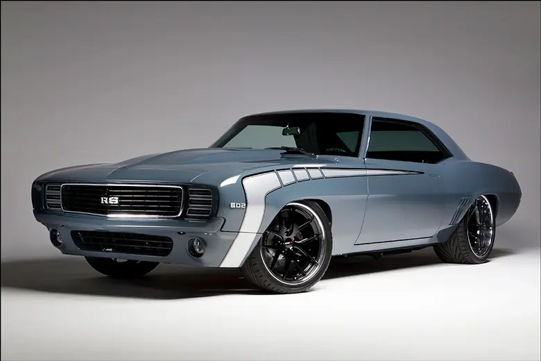
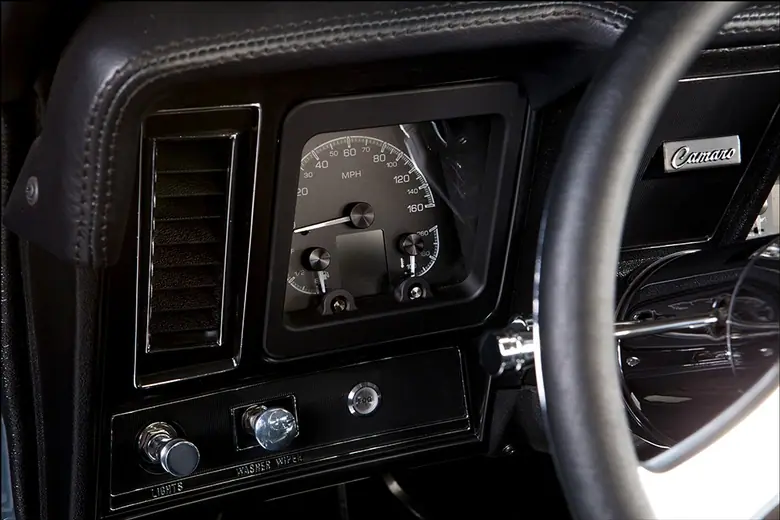
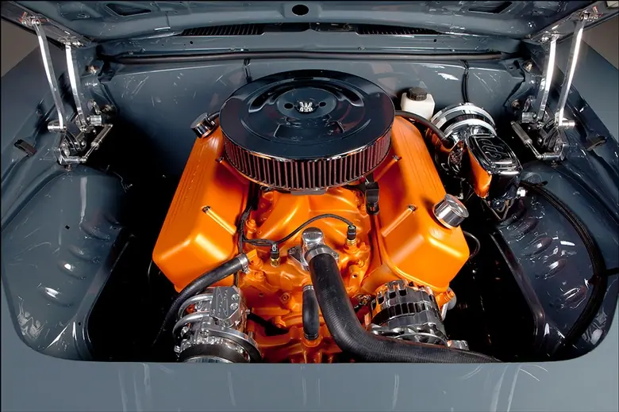
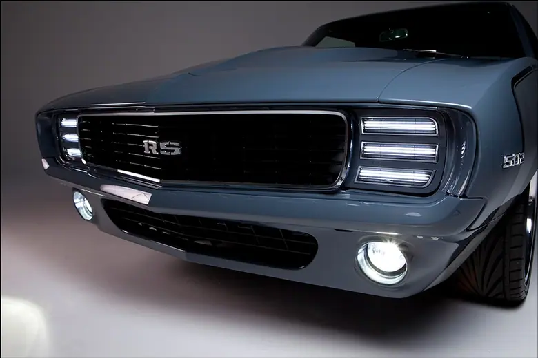
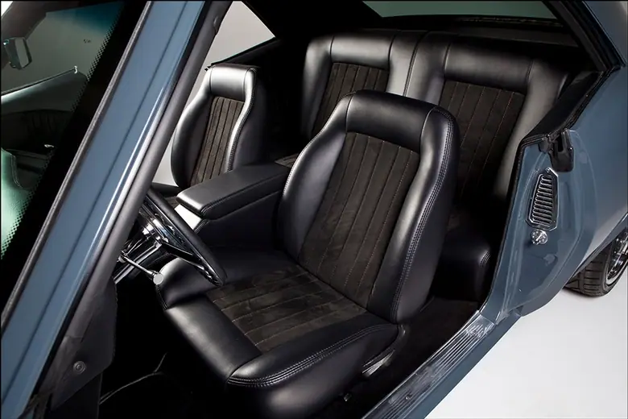
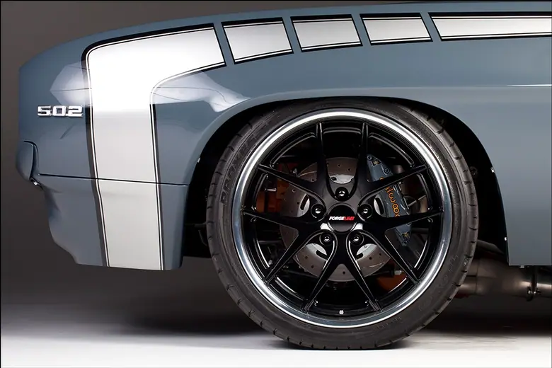

Kindig '69 Camaro


Muscular
This '69 Camaro looks ready to fight
Apparently, the collective hot rod world is fed up with the ’69 Camaro. The distain was born in the 1980s and ‘90s, when you could hardly pick up a magazine without getting a face full of fake Z/28 badges and polished Centerlines. To be fair, our society loves to run a trend into the ground to the point that it’s no longer popular. Hate the game, not the undeniably beautiful player. The fact that the ’69 Camaro has been done to death makes it that much sweeter when you come across one just a little bit different. The tough, muscle car vibe is a must, but with a mild tweak here and there, you can have something really special.
The mission statement of Kindig-It Designs may as well be “you can have something really special.” We’ve seen them make masterpieces from VW buses, a ’34 Chrysler, ’47 Cadillac; a bunch of oddballs turned into works of art. But, what could they do with the well-known ’69 Camaro canvas?

One thing that they all need, whether drag oriented or dressed up to carve corners, is a burly engine under the hood. A tried and true rat motor straight from the General himself breathes deeply through the stock 502HO intake manifold, topped by a Holley Terminator EFI system. Billet Specialties was tapped to dress the big block with valve covers and Tru Trac serpentine system. The satin orange paint really looks traditional on this big block, but the level of detail is far beyond how they came from the factory. 550lb/ft never looked this good! A Tremec T56 is stationed behind the rat, because a stir-it-yourself big block is the best kind, especially when it makes all the right sounds. Thanks to the Borla mufflers plumbed into the custom stainless exhaust, this one does just that!
Team Kinding-It took a long look at the stock underpinnings and then got to work. I imagine the scene was a lot like the Scarecrow versus the Flying Monkeys. Luckily it all went back together, this time with custom built tubular front control arms and a Detroit Speed Quadralink rear suspension system using JRi coilovers. Wilwood discs with color matched calipers can be found at each corner, peeking through the gloss black Forgeline wheels fitted with Toyo Proxes rubber.

A few choice modifications were applied to the exterior of the F-body, starting with the signature flush door handles from Kindig-It Designs. These assemblies weld into the door skin to replace the stock handle, giving the look of a shaved door with the full functionality of a traditional handle. Another Kindig-It original, the Flat Out rear spoiler adorns the trunklid, paying tribute to the stock “ducktail” spoiler. On the opposite end, a custom front lower valance was hand formed with the grill opening flanked by round driving lights, possibly inspired by the 5th gen Camaro. The engine bay was cleaned up with a shaved firewall and swoopy core support cover; the custom panels covered in Porsche Blue Graphite Metallic paint do a terrific job of framing the 502 as the centerpiece. The rest of the sheetmetal was hosed with Blue Graphite to match, then decked out with a 21st Century take on the classic “hockey stick” stripe in black and silver.

Getting around to the control room, you’ll find a pair of chairs modified by JS Custom Interiors and a chrome ididit steering column capped by a Billet Specialties wheel. Down below is a trio of billet pedals. What you won’t find, but is indeed present, is a boat load of Dynamat heat and noise insulation and a stealthy Vintage Air system, hidden in plain sight with stock-appearing slider controls. Also flying under the radar is the direct fit HDX instrument system; the black alloy face styling can certainly be overlooked at a glance, but when the key is turned and the LED backlighting comes on, there’s no mistaking the goods.
So what do we have here; is it the evolution of a trend? It’s definitely a ’69 Camaro, but most certainly not the same old thing. Kinding-It Designs’ sleek, updated version of our favorite pony car is a breath of fresh air and proof that there’s always something new to be tried in our hot rod world.

Also on dakotadigital.com.